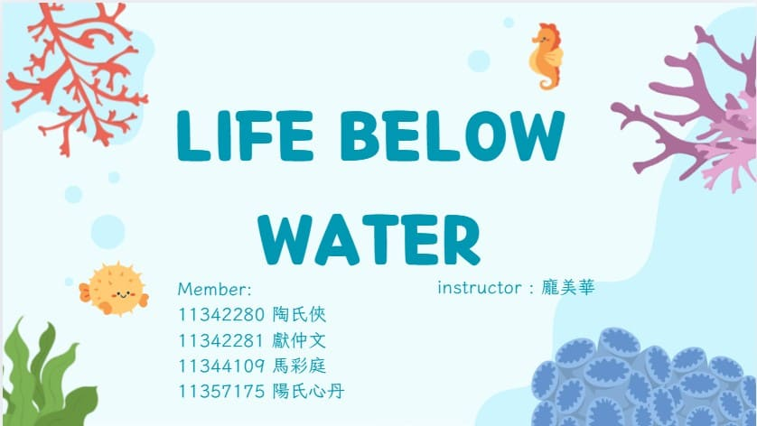

<!DOCTYPE html>
<html lang="zh-Hant">
<head>
  <meta charset="UTF-8">
  <meta name="viewport" content="width=device-width, initial-scale=1.0">
  <title>馬彩庭的個人履歷</title>
  <link rel="stylesheet" href="style.css">
</head>
<body>
  <!-- 左 -->
  <aside class="sidebar">
    
    <nav class="slogan">
      行動是理想最高貴的表達
    </nav>
    
    <h1>馬彩庭</h1>
    <nav class="social">
      <a href="https://www.facebook.com/馬彩庭" target="_blank"></a>
      <a href="https://www.instagram.com/caiting0118._" target="_blank"></a>
      <a href="mailto:may950118@gmail.com"></a>
    </nav>
    <p class="school">中原大學 - 資訊管理學系</p>

  <h2 class="traits-title">個人特質</h2>

  <article class="traits-wrapper">
    <nav class="traits-list">
      <span>互助合作</span>
      <span>解決問題</span>
      <span>主動積極</span>
      <span>規劃執行</span>
      <span>溝通協調</span>
    </nav>
  </article>

  <h2 class="Diverse-title">多元學習</h2>

  <article class="Diverse-wrapper">
    <nav class="Diverse-list">
      <span>計算機概論</span>
      <span>金融市場</span>
      <span>投資學</span>
      <span>作業系統</span>
    </nav>
  </article>

  <h2 class="Activity-title">活動經歷</h2>

  <article class="Activity-wrapper">
    <nav class="Activity-list">
      <span>資訊安全能力競賽</span>
      <span>數位城市治理黑客松</span>
      <span>資訊安全競賽</span>
      <span>智慧創新大賽競賽</span>
      <span>全國AI創意實作競賽</span>
      <span>電腦軟體設計競賽</span>
    </nav>
  </article>
  </aside>

  <!-- 右 -->
  <aside class="content">
    <section class="section">
      <h2>基本資料</h2>
      <p>
        生日：95.01.18<br>
        畢業學校：中壢國中、啟英高中<br>
        興趣：畫畫、聽音樂、看電影<br>
        實習：日月光IT部門、國泰CASP行政人才實習計畫<br>
        證照：CCNA、ERP軟體應用師<br>
        應徵項目：資料庫管理人員<br>
        未來目標<br>
        短程：在工作崗位上，盡快進入狀況，並全方位學習<br>
        中程：考取工作所需相關所有證照<br>
        遠程：透過精進，成為組織重要幹部<br>
      </p>
    </section>

    <section class="section">
      <h2>專業技能</h2>
      <article class="skills">
        <article class="circle">
          <svg>
            <circle class="bg" cx="60" cy="60" r="50" />
            <circle class="fg js" cx="60" cy="60" r="50" />
          </svg>
          <article class="label"><h4>JavaScript</h4><p>80%</p></article>
          </article>
        <article class="circle">
          <svg>
            <circle class="bg" cx="60" cy="60" r="50" />
            <circle class="fg py" cx="60" cy="60" r="50" />
          </svg>
          <article class="label"><h4>Python</h4><p>60%</p></article>
        </article>
        <article class="circle">
          <svg>
            <circle class="bg" cx="60" cy="60" r="50" />
            <circle class="fg cc" cx="60" cy="60" r="50" />
          </svg>
          <article class="label"><h4>C++</h4><p>50%</p></article>
        </article>
        <article class="circle">
          <svg>
            <circle class="bg" cx="60" cy="60" r="50" />
            <circle class="fg c" cx="60" cy="60" r="50" />
          </svg>
          <article class="label"><h4>C</h4><p>60%</p></article>
        </article>
      </article>
    </section>
        
    <section class="section">
      <h2>語言能力</h2>
      <article class="pies">
        <article class="pie-card">
          <article class="pie chinese">
            <article class="label"><span>中文</span><span>100%</span></article>
          </article>
          <p class="legend"><span class="swatch" style="background:#7fd19a"></span>母語</p>
        </article>
        <article class="pie-card">
          <article class="pie english">
            <article class="label"><span>英文</span><span>70%</span></article>
            </article>
          <p class="legend"><span class="swatch" style="background:#6fb3f2"></span>中高級</p>
        </article>
        <article class="pie-card">
          <article class="pie japanese">
            <article class="label"><span>日文</span><span>30%</span></article>
            </article>
          <p class="legend"><span class="swatch" style="background:#f2b66f"></span>初階</p>
        </article>
      </article>
    </section>
    
    <section class="section">
      <h2>經歷</h2>
      <article class="experience">
        <h3>大一上</h3>
        <article class="exp-item">
          <p>
            英文 - Life below water<br>
            這堂英文課要做關於 SDGs 的報告，<br>
            做完這份報告讓我們意識到，<br>
            海洋污染並非遙遠的問題，<br>
            而是與我們每個人的日常生活息息相關。
          </p>
          <a href="https://www.canva.com/design/DAGgZODNYUg/cLl7sLprWCs7e-88lq5sAQ/view?utm_content=DAGgZODNYUg&utm_campaign=designshare&utm_medium=link2&utm_source=uniquelinks&utlId=hcb415db9c5" target="_blank">
          
          </a>
        </article>

        <h3>大一下</h3>
        <article class="exp-item">
          <p>
            管理學 志工服務 - 張媽媽動物收容所<br>
            我第一次參加照顧動物的活動。<br>
            一開始看到狗狗們很激動，我感到有些害怕。<br>
            但隨著時間的相處，我漸漸發現牠們的可愛與獨特個性。<br>
            這次經驗讓我學習到如何應對狗狗突如其來的大小便狀況，克服心理障礙去清理。
          </p>
          <a href="https://www.canva.com/design/DAGkTbEr44w/kHmrkX7kCY_AYZCxjjXHzQ/view?utm_content=DAGkTbEr44w&utm_campaign=designshare&utm_medium=link2&utm_source=uniquelinks&utlId=hd07bb9e881" target="_blank">
          
          </a>
        </article>

        <h3>大二上</h3>
        <article class="exp-item">
          <p>
            大數據分析 網路購物<br>
            我學到不僅僅是注重在喜愛度，<br>
            像是搜尋的關鍵字、點擊次數、觀看時間等等也都包含在內。<br>
            大數據看似只是一些數據，卻能應用在生活中，幫助我們更快找到答案。
          </p>
          <a href="https://www.canva.com/design/DAFfxvED_rg/Atv0YGird7uujAb74biqlQ/view?utm_content=DAFfxvED_rg&utm_campaign=designshare&utm_medium=link2&utm_source=uniquelinks&utlId=h8ea2978400" target="_blank">
          
          </a>
        </article>
      </article>
    </section>

    <footer>
      <p>11344109 馬彩庭</p>
    </footer>
  </aside>
</body>
</html>
